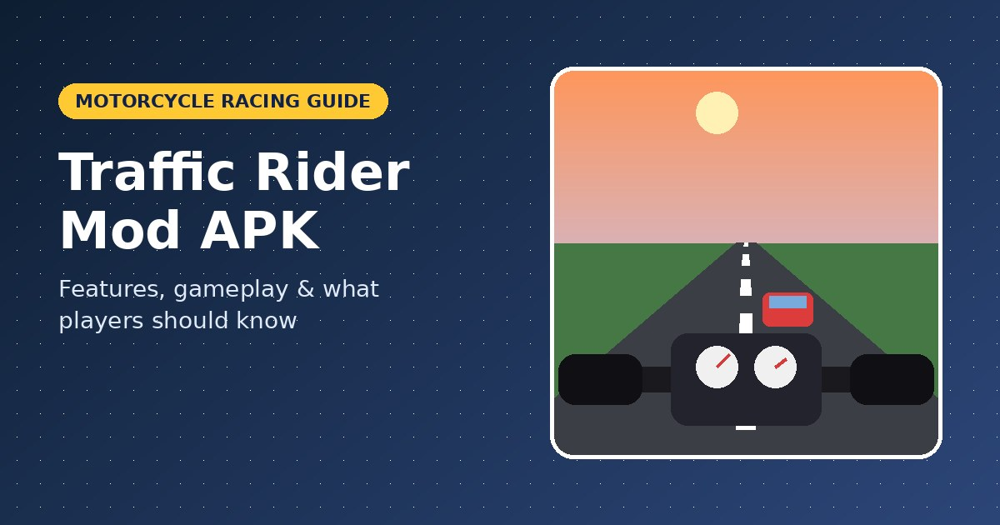
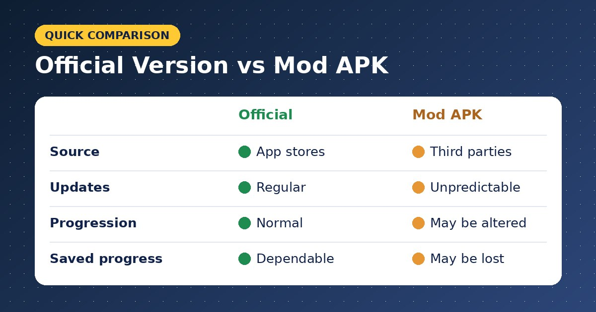
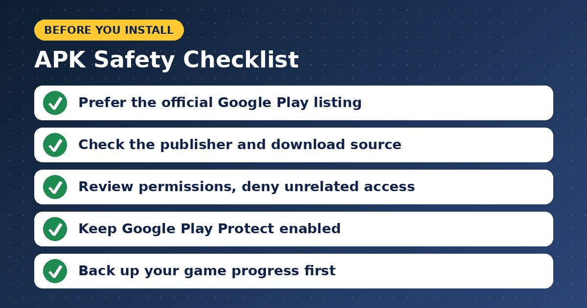

Traffic Rider Mod APK: Features, Gameplay, and What Players Should Know

Motorcycle racing games appeal to players who enjoy speed, quick reactions, and the challenge of navigating busy roads. Traffic Rider delivers this experience through first-person motorcycle riding, highway traffic, and missions that encourage players to improve their performance. Many Android users also search for Traffic Rider Mod APK to learn about modified game versions and the additional features they may offer.
Understanding the original game, its progression system, and the differences between official and modified applications can help players make better decisions. This guide explores the main gameplay features, practical riding strategies, and important safety considerations before installing an Android game.
What Is Traffic Rider Mod APK?
Traffic Rider Mod APK is a term used for unofficial, modified Android installation packages based on the Traffic Rider game. Third-party distributors may advertise changes such as unlimited in-game money, unlocked motorcycles, additional resources, or fewer advertisements.
These modifications are separate from the original release published by skgames. Their actual features depend on the individual package, and advertised benefits should not be assumed to work in every version.
Players researching modified editions can visit https://www.trafficridersmodapk.com/ for information related to the topic. Before installing any file, check its source, compatibility, and potential security risks.
Main Features of Traffic Rider
The official version offers several features that make it appealing to motorcycle racing fans.
First-Person Motorcycle Gameplay
Traffic Rider uses a first-person camera that places players behind the handlebars. Instead of viewing a motorcycle from a distant camera angle, players see the road from the rider's perspective. This makes traffic awareness, timing, and controlled lane changes central to the experience.
A Variety of Motorcycles
The developer's official game description lists 34 motorcycles. Players can earn in-game currency, purchase bikes, and upgrade their equipment as they progress. Different motorcycles provide goals for players who want to improve their performance and explore the game's progression system.
Career Missions and Endless Racing
Career Mode features structured missions with specific objectives. Endless riding focuses on continuing along the highway while avoiding collisions and building a score. These different approaches give players options depending on whether they prefer completing challenges or improving their distance and riding consistency.
Sound and Visual Details
Recorded motorcycle engine sounds and environments with day-and-night variations help create an engaging atmosphere. These details add variety to the racing experience without requiring players to learn complicated controls.
The developer's published feature list also includes online leaderboards and achievements, giving players additional goals beyond individual rides. (Official game information)
Why Do Players Search for Modified APKs?
One common reason is progression. Unlocking motorcycles and paying for upgrades can take repeated missions and successful rides. Some players therefore look for modified packages that claim to reduce this effort.
Others are interested in exploring additional content or avoiding interruptions. However, a modified APK may not provide everything its description promises. It can also become incompatible after an update or fail to preserve existing game progress.
A useful distinction is that features described by the original developer can be verified through official listings, while claims about an individual modified file require separate evidence.
Traffic Rider Mod APK vs. the Official Version
The official version is distributed through authorized app stores, where users can check the developer, compatibility details, and available updates. Modified packages are generally distributed by third parties, making their contents and maintenance less predictable.

The original game follows its normal progression system. A modified version may alter in-game resources or access to content, depending on the changes made by its distributor.
For players who value predictable updates and a more dependable installation process, the official release is generally the better starting point. Modified versions introduce additional uncertainty about functionality, file integrity, and saved progress.
Is Traffic Rider Mod APK Safe?
An APK file is an Android application package. Installing one from an unfamiliar source can expose a device to risks if the file has been altered to include unwanted software or excessive permissions.

Before installing an application, consider these precautions:
- Prefer the official Google Play Store listing.
- Check the publisher's name and the download source.
- Review permissions and avoid granting unrelated access.
- Keep Google Play Protect enabled and take security warnings seriously.
- Avoid installers that request sensitive information or require unrelated downloads.
A security scan can identify some known threats, but a clean result does not guarantee that an application is harmless. Players should also avoid uninstalling an existing game before checking whether their progress is backed up.
Tips for Improving Your Gameplay
Consistent riding can be more valuable than chasing the highest speed immediately. Practice observing traffic ahead, making smooth lane changes, and avoiding sudden movements near other vehicles.
Career missions provide structured opportunities to improve. Complete objectives that suit your current motorcycle before spending resources on more expensive upgrades. The official game description also explains that close overtakes at higher speeds and riding in the opposite direction on two-way roads can earn bonus scores and cash. These techniques increase the challenge, so timing and control matter.
Choose upgrades according to the demands of the missions you want to complete rather than assuming that the most expensive motorcycle is always the easiest to handle.
Where Can You Get the Official Game?
Android players can search for Traffic Rider by skgames on Google Play. iPhone and iPad users can check the Apple App Store listing.
Check the developer name and device compatibility before installing an application with a similar title. Store availability and features may vary by platform and region.
Frequently Asked Questions
Does Traffic Rider Mod APK include unlimited money?
Some third-party listings advertise unlimited money, but this depends on the particular modification and cannot be guaranteed.
Is Traffic Rider Mod APK an official application?
No. A modified APK is an unofficial version changed by a third party, rather than the original application released by skgames.
Can Traffic Rider be played offline?
The game supports offline riding gameplay. Online leaderboards and certain connected features may require an internet connection.
Is Traffic Rider free to download?
The official game is available as a free download with advertisements and optional in-app purchases. Availability may vary by platform and region.
Final Thoughts
Traffic Rider combines first-person motorcycle riding, highway challenges, career missions, and motorcycle upgrades in one mobile racing experience. Modified APKs may advertise shortcuts or additional features, but their reliability and safety depend on the individual file.
Learning about the original game and checking download sources carefully can help players make informed choices. Whether you prefer completing missions or improving your endless-riding scores, understanding the gameplay mechanics is a practical first step toward a better racing experience.